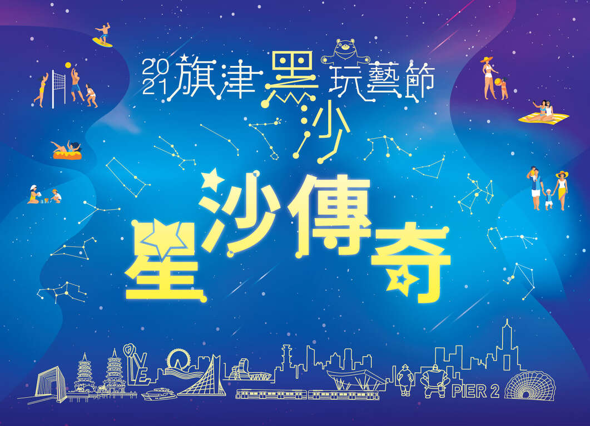

黑沙玩藝節

旗津黑沙玩藝節自 2015
年起辦理，每年吸引近百萬遊客人次參加，成功打響高雄旗津活動品牌。
「2021旗津黑沙玩藝節」以《星沙傳奇》主題定調推出一系列多元活動，以星座、星際等元素作為主題，打造高度超過6公尺的大型主雕「太空騎鯨」以及各具特色的「12星座沙雕」。
特色12星座沙雕融合星座特性與高雄在地文化、特色，例如愛吃美食的金牛座捧著來旗津必吃的大碗公冰，邊品嚐高雄大樹特產－鳳梨。兼具冒險、勇氣及十足行動力的牡羊座，駐足於全台首座水平旋轉橋－大港橋，欣賞高雄港水岸觀光美景等，每座沙雕都是一個精彩的星座故事。除了有別於往年耳目一新的感覺外，更大大滿足了各年齡層客群的喜好，也成為闔家出遊、打卡的旅遊熱點。
「2021旗津黑沙玩藝節」除了有別具特色的大型沙雕為大家帶來浪漫的星座故事之外，還有超多周邊系列活動等您來體驗！酷愛沙灘排球的你&妳看過來，快和三五好友組隊報名大展身手、享受比賽樂趣，冠軍還能夠把萬元獎金帶回家！
除了沙灘排球賽，還有來到海邊絕對不能錯過的水上活動。「衝浪」帶你享受乘風破浪的刺激；以及老少咸宜的「立式划槳（SUP）體驗」，讓專業的教練帶你一起征服旗津海域，成為海上傳奇吧！有陸上、水上活動，怎麼能少了天空中精采的特技風箏表演？今年邀請「高雄市雲霄風箏協會」表演特技風箏以及大型風箏，此外在會場附近也會進行放飛及販售風箏喔！
最特別的是今年還邀請到了「高雄市天文學會」帶領大家觀賞當天星空，講解星座美麗的故事，不論是朋友、情人或闔家大小，大家一起來找找自己的星座，說不定還會看見難得一見的行星喔！
時間：2021/10/30 - 11/14
主辦單位｜高雄市政府觀光局
協辦單位｜交通部觀光局
指導單位｜海洋委員會海巡署南部分署、海洋委員會海巡署艦隊分署、高雄市政府警察局、鼓山分局、消防局、交通局、環保局、新聞局、經發局、臺灣港務股份有限公司、內政部警政署、旗津區公所、高雄市輪船股份公司、高雄捷運股份有限公司、高雄市旗后商圈發展協會、高雄市哈瑪星風華再現促進協會、高雄港區土地開發股份有限公司、大魯閣草衙道購物中心、鈴鹿賽道樂園、旗津沙灘吧、MIKASA、國立中山大學USR城市共事館
主辦單位｜高雄市政府觀光局
協辦單位｜交通部觀光局
指導單位｜海洋委員會海巡署南部分署、海洋委員會海巡署艦隊分署、高雄市政府警察局、鼓山分局、消防局、交通局、環保局、新聞局、經發局、臺灣港務股份有限公司、內政部警政署、旗津區公所、高雄市輪船股份公司、高雄捷運股份有限公司、高雄市旗后商圈發展協會、高雄市哈瑪星風華再現促進協會、高雄港區土地開發股份有限公司、大魯閣草衙道購物中心、鈴鹿賽道樂園、旗津沙灘吧、MIKASA、國立中山大學USR城市共事館